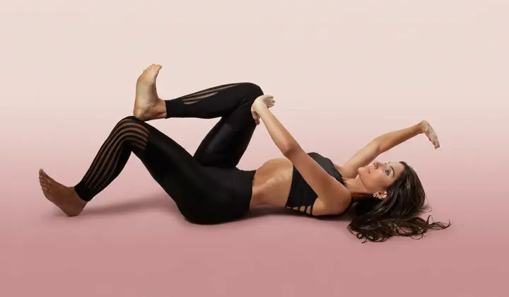

Diagnóstico personalizado · 2 min
Descubra o que faz sua barriga estufar e não diminuir nem emagrecendo.

Dieta, academia e cinta não resolvem se a causa for estrutural. Faça o teste de 2 minutos e receba o seu diagnóstico personalizado.
Desenvolvido por Priscilla Céo · Especialista em Reabilitação Abdominal
© Todos os direitos reservados · Priscilla Céo
Priscilla Teixeira CEO Frisso · CNPJ 48.091.952/0001-94